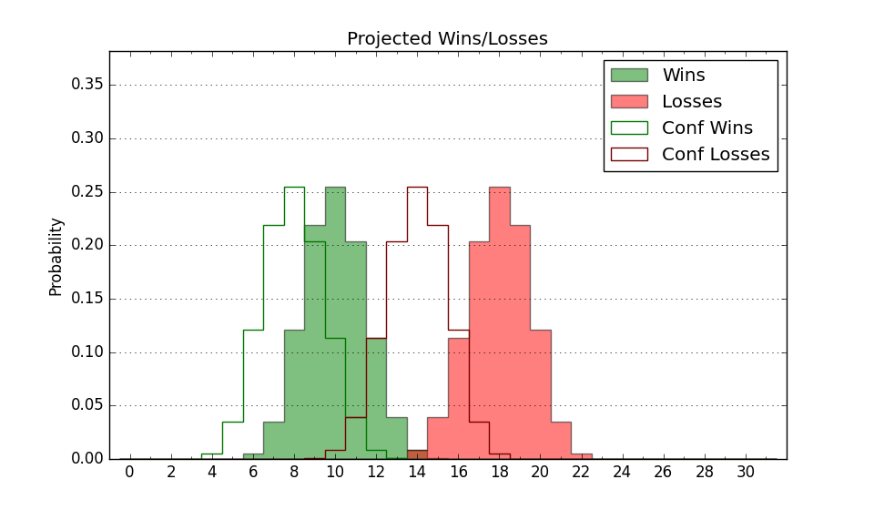

| Home | Game Probabilities | Conferences | Preseason Predictions | Odds Charts | NCAA Tournament |
| City: | San Antonio, Texas | |
| Conference: | Southland (9th)
| |
| Record: | 4-8 (Conf) 6-12 (Overall) | |
| Ratings: | Comp.: -7.7 (241st) Net: -7.9 (245th) Off: 105.8 (210th) Def: 113.8 (271st) SoR: 0.0 (119th) |
| Remaining | ||||||
|---|---|---|---|---|---|---|
| Date | Opponent | Win Prob | Pred. | |||
| 1/31 | UT Rio Grande Valley (157) | 44.3% | L 70-72 | |||
| 2/2 | @ Tex A&M Corpus Chris (176) | 22.0% | L 63-71 | |||
| 2/7 | @ McNeese St. (54) | 5.1% | L 64-83 | |||
| 2/9 | @ Southeastern Louisiana (261) | 39.1% | L 67-70 | |||
| 2/14 | Nicholls St. (229) | 62.4% | W 77-73 | |||
| 2/16 | New Orleans (202) | 55.2% | W 78-77 | |||
| 2/21 | @ Texas A&M Commerce (294) | 47.3% | L 72-73 | |||
| 2/23 | @ Northwestern St. (277) | 42.8% | L 73-75 | |||
| 2/28 | Lamar (194) | 53.5% | W 71-70 | |||
| 3/2 | Stephen F. Austin (96) | 26.3% | L 67-74 | |||
| Previous | Game Score | |||||
| Date | Opponent | Win Prob | Result | Off | Def | Net |
| 11/3 | @Colorado St. (84) | 8.3% | L 64-98 | -7.8 | -31.4 | -39.1 |
| 11/16 | @Indiana (29) | 2.1% | L 61-69 | 0.8 | 21.3 | 22.2 |
| 11/20 | (N) Southern Indiana (321) | 72.3% | W 87-81 | 15.4 | -12.8 | 2.6 |
| 11/22 | (N) High Point (90) | 14.8% | L 80-91 | 9.9 | -16.5 | -6.6 |
| 12/1 | McNeese St. (54) | 15.5% | W 71-67 | 5.1 | 15.9 | 21.0 |
| 12/6 | @Nicholls St. (229) | 32.8% | L 67-74 | -3.0 | -5.0 | -8.0 |
| 12/8 | @New Orleans (202) | 26.6% | L 83-84 | 15.3 | -4.3 | 11.0 |
| 12/15 | @TCU (45) | 4.0% | L 65-69 | 7.4 | 10.2 | 17.6 |
| 12/21 | Northern Arizona (291) | 74.7% | W 90-66 | 18.9 | 8.0 | 26.9 |
| 12/30 | Southeastern Louisiana (261) | 68.6% | W 79-70 | 1.4 | 2.9 | 4.3 |
| 1/3 | Houston Baptist (293) | 75.1% | W 73-56 | -9.1 | 21.4 | 12.3 |
| 1/5 | @UT Rio Grande Valley (157) | 19.0% | L 67-80 | 4.1 | -11.8 | -7.7 |
| 1/10 | @Lamar (194) | 25.3% | L 51-63 | -17.6 | 12.0 | -5.6 |
| 1/12 | @Stephen F. Austin (96) | 9.5% | L 46-56 | -25.8 | 34.8 | 9.0 |
| 1/17 | Northwestern St. (277) | 71.8% | W 76-74 | 0.8 | -3.7 | -2.8 |
| 1/19 | Texas A&M Commerce (294) | 75.3% | L 58-80 | -15.3 | -33.9 | -49.2 |
| 1/24 | Tex A&M Corpus Chris (176) | 49.0% | L 71-79 | -0.3 | -17.3 | -17.6 |
| 1/27 | @Houston Baptist (293) | 47.0% | L 75-81 | -8.2 | -4.3 | -12.5 |
| Stats & Trends | |||||
|---|---|---|---|---|---|
| Current | Day | Week | Month | Season | |
| Composite | -7.7 | -0.0 | -1.5 | -6.2 | -3.2 |
| Comp Rank | 241 | -- | -15 | -68 | -65 |
| Net Efficiency | -7.9 | -0.0 | -1.5 | -7.8 | -- |
| Net Rank | 245 | -- | -17 | -72 | -- |
| Off Efficiency | 105.8 | -0.1 | -0.3 | -9.1 | -- |
| Off Rank | 210 | -2 | -1 | -123 | -- |
| Def Efficiency | 113.8 | +0.1 | -1.3 | +1.3 | -- |
| Def Rank | 271 | -- | -22 | +31 | -- |
| SoS Rank | 173 | +2 | -16 | -139 | -- |
| Exp. Wins | 10.0 | +0.0 | -1.5 | -4.3 | -5.6 |
| Exp. Conf Wins | 8.0 | +0.0 | -1.5 | -4.3 | -4.5 |
| Conf Champ Prob | 0.0 | -- | -- | -1.4 | -8.5 |

| Advanced Stats | ||
|---|---|---|
| Stat | Value | Rank |
| Off Eff FG % | 0.476 | 295 |
| Off Ast Ratio | 0.117 | 344 |
| Off ORB% | 0.310 | 159 |
| Off TO Rate | 0.131 | 73 |
| Off FT Ratio | 0.310 | 285 |
| Def Eff FG % | 0.536 | 257 |
| Def Ast Ratio | 0.149 | 195 |
| Def ORB% | 0.335 | 295 |
| Def TO Rate | 0.154 | 141 |
| Def FT Ratio | 0.465 | 343 |